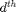
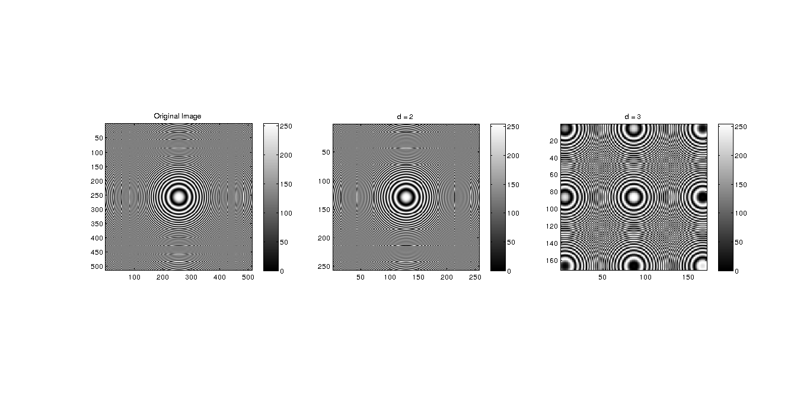
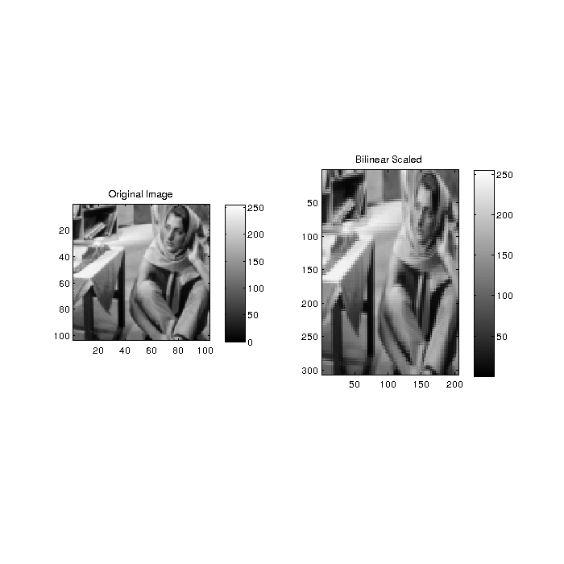

Report for Question 1
This question dealt with oversampling ans subsampling images to shrink/expand them. Three methods were chiefly used. Subsampling for shrinking the image, and Bilinear interpolation and Nearest Neighbour interpolation for expanding the image.
Contents
Setting the colormap
We have set the colour map with 200 colours, to fit the specifications required in the question
myNumOfColors = 200; myColorScale = [ [0:1/(myNumOfColors-1):1]', [0:1/(myNumOfColors-1):1]', [0:1/(myNumOfColors-1):1]'];
Shrinking images using subsampling
The subsampling, done by the function myShrinkImageByFactorD, essentially removes every  pixel from the rows and columns. They are displayed side by side for reference
input_image_1 = imread('../data/circles_concentric.png');
output_image_1 = myShrinkImageByFactorD(input_image_1, 2);
output_image_2 = myShrinkImageByFactorD(input_image_1, 3);
figure('Position', [0 0 2000 2000]); colormap(myColorScale); subplot(1,3,1), imagesc(input_image_1); title('Original Image'); daspect([1 1 1]); colorbar subplot(1,3,2), imagesc(output_image_1); title('d = 2'); daspect([1 1 1]); colorbar subplot(1,3,3), imagesc(output_image_2); title('d = 3'); daspect([1,1,1]); colorbar
Extension of image using Bilinear Interpolation
In this section, the myBilinearInterpolation function converts an (M,N) image to a (3M-2, 2N-1) image, and uses the bilinear interpolation algorithm to fill in the pixels. This has been completely vectorized, completely eliminating loops.
input_image_2 = imread('../data/barbaraSmall.png');
output_image_scaled_1 = myBilinearInterpolation(input_image_2);
figure('Position', [100 100 700 700]); colormap(myColorScale); subplot(1,2,1), imagesc(input_image_2); title('Original Image'); daspect([1 1 1]); colorbar subplot(1,2,2), imagesc(output_image_scaled_1); title('Bilinear Scaled'); daspect([1 1 1]); colorbar axis tight;
Nearest Neighbour Interpolation
In this section, the MyNearestNeighbourInterpolation function scales the image according to question specifications, and fills the pixels with the intensity of nearest neighbour. This gives sharper edges, but is worse at capturing finely changing details of the original, like skin tone.
output_image_scaled_2 = myNearestNeighborInterpolation(input_image_2); figure('Position', [100 100 700 700]); colormap(myColorScale); subplot(1,2,1), imagesc(input_image_2); title('Original Image'); daspect([1 1 1]); colorbar subplot(1,2,2), imagesc(output_image_scaled_2); title('Neighbourhood Interpolation'); daspect([1 1 1]); colorbar axis tight;